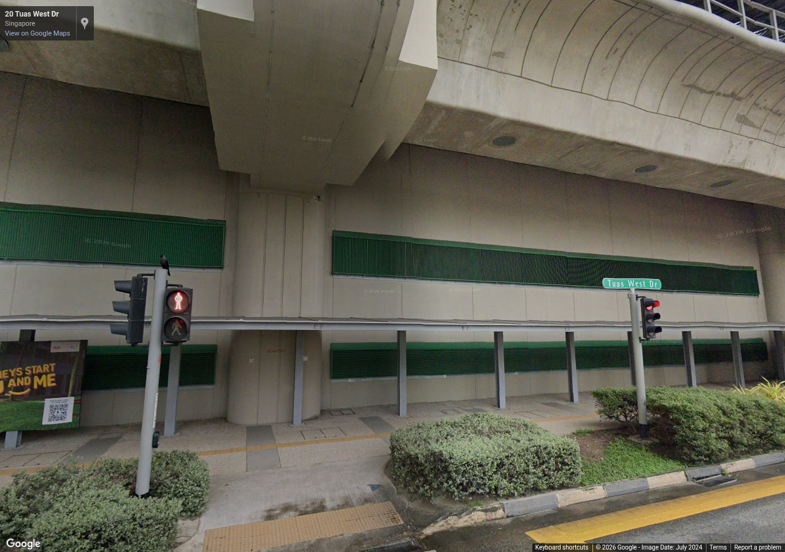
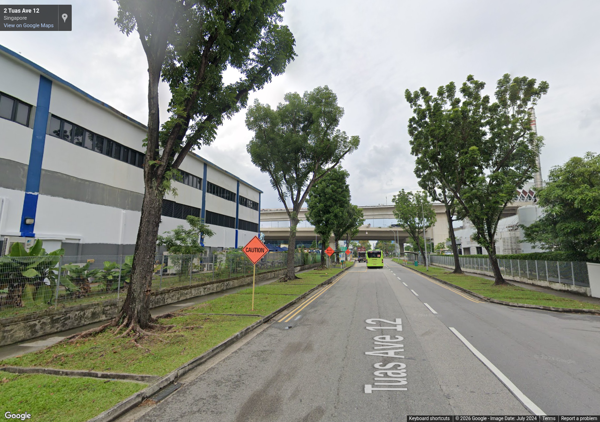

Source 2024-07, heading 310°, pitch 8°, zoom 1. Metadata / review

Source 2024-07, heading 210°, pitch 8°, zoom 1. Metadata / review
Authorized reference screenshots. Attribution retained. Open full-size images to review clarity; capture success alone is not visual acceptance.

